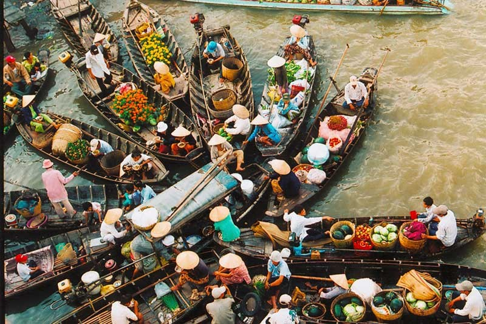
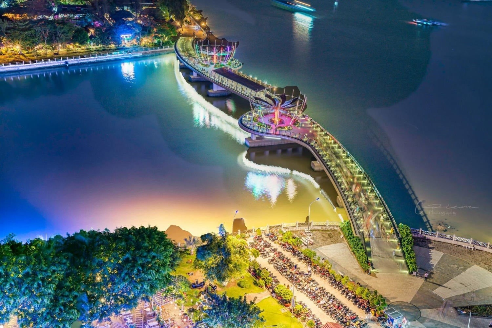
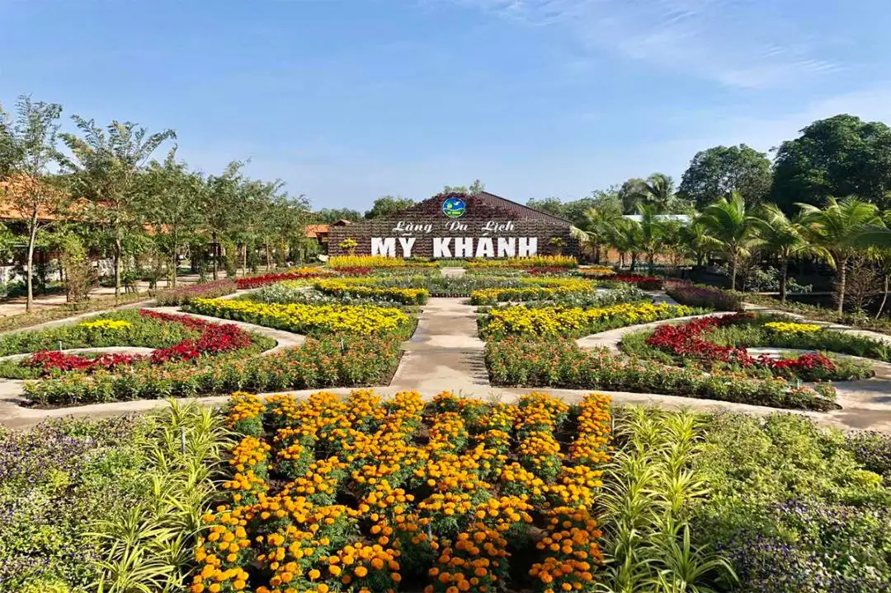
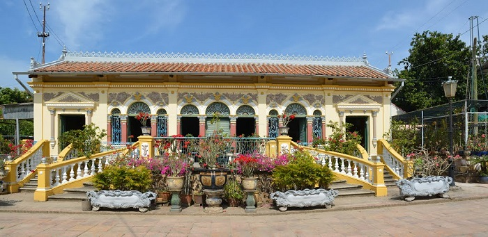
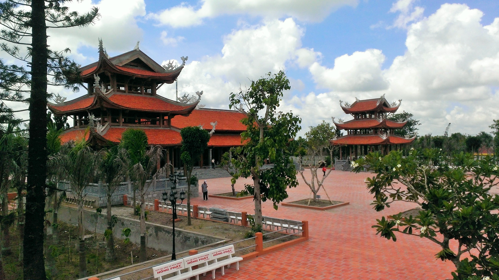

Địa chỉ: Sông Cần Thơ, Q. Cái Răng (cách bến Ninh Kiều 30 phút đi tàu).
Trải nghiệm chính:
- Tìm hiểu cách quảng cáo độc đáo qua "Cây Bẹo".
- Ăn sáng (hủ tiếu, bún riêu) và uống cà phê ngay trên mặt nước.
- Mua trái cây tươi rói từ các ghe tiểu thương lúc bình minh.

Địa chỉ: Đường Hai Bà Trưng, P. Tân An, Q. Ninh Kiều.
Trải nghiệm chính:
- Check-in tại Cầu Tình Yêu lung linh đèn LED về đêm.
- Dạo công viên, chiêm bái Tượng đài Bác Hồ.
- Thưởng thức ẩm thực và đờn ca tài tử trên Du thuyền sông Hậu.
- Mua sắm, ăn vặt tại Chợ đêm Ninh Kiều.

Địa chỉ: 335 Lộ Vòng Cung, Xã Mỹ Khánh, H. Phong Điền.
Trải nghiệm chính:
- Tham quan Nhà Cổ và hóa thân thành Điền chủ/Bà chủ xưa.
- Trải nghiệm làm nông dân: Tát mương bắt cá, mặc áo bà ba.
- Xem đua heo, đua chó và xiếc khỉ vui nhộn.
- Thưởng thức đặc sản: Lẩu mắm, bánh xèo, cá lóc nướng trui.

Công trình kiến trúc hơn 100 năm tuổi, kết hợp hài hòa phong cách Pháp và truyền thống Nam Bộ.

Không gian thanh tịnh với kiến trúc Phật giáo thời Lý - Trần đặc trưng.